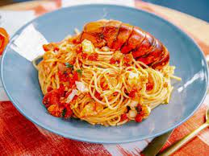

Excellent lobster pasta . . . lobster lovers that love Italian dig in! Perfect for Valentines Day!
Ingredients
- 1 large fresh lobster
- 3 tablespoons butter
- 1 large onion, chopped
- 3 cloves garlic, chopped
- 1 can diced tomatoes
- 4 tablespoons olive oil
- 4 tablespoons salt
- 1 teaspoon ground black pepper
- 1 tablespoon ground cinnamon
- 1 cup heavy cream
- 1 package dried spaghetti
- 1 tablespoon butter
- 1 tablespoon butter
- 1 clove garlic, minced
- 1 bunch fresh parsley, chopped
Directions
- Bring a large pot of water to a boil. Add the lobster and cook for 6 to 8 minutes, until bright red.
- As soon as the lobster starts cooking, melt 3 tablespoons of butter in a large skillet over medium heat. Add the onion and 3 cloves of garlic. Cook and stir just to release the liquid. Do not let them brown.
- When the lobster comes out of the pot, place it on a cutting board and use a big knife to cut it in half lengthwise. Place the halves meaty side down into the skillet with the onion and garlic. Cook for about 3 minutes.
- Bring another pot of water to a boil and season with a little salt. Add the spaghetti and cook for 8 minutes, or until tender. If you want to save time and a pot, you could boil the pasta in the lobster water since it is already boiling, just add salt.
- Add the tomatoes to the skillet and turn the heat up to high to bring to a boil. Add the olive oil, salt, pepper and cinnamon. Cook, stirring constantly for 5 to 7 minutes. Slowly pour in the cream, stirring constantly. The sauce will become a nice pink color. Turn the heat down to medium-low. Keep warm, stirring occasionally until the pasta is done.
- Drain the spaghetti and place on a large serving plate. Stir in the remaining butter and garlic. Pour the tomato sauce over the spaghetti and arrange the two lobster halves in the center. Sprinkle all over with parsley and serve.
Note
If you wish to purchase an already coocked lobster, boil it for 3 to 4 minutes just to warm it up.
Nutrition Facts
Per Serving
- 879 calories
- protein 47.8g
- carbohydrates 59.4g
- cholesterol 239.7mg
- sodiun 3425.6mg